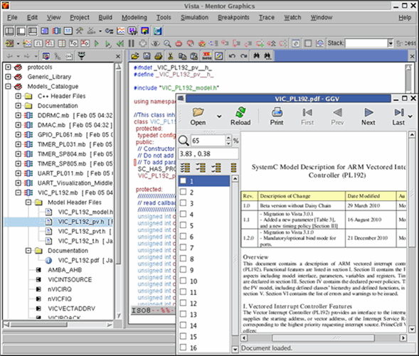

Vista Models Catalogue Library
A new Models Library has been established which consists of common models that are widely used in the industry. Unlike the generic Models library, those models are specific, based on predefined characteristics which may not be editable.
The Models shall be integrated into Vista to enable broader modeling usage by ESL customers. The new models will be grouped in a new dedicated library referred to as “Models Catalogue”. Like the generic library, you may add any model to the project though you won't be able to change the model's interface or functionality.
The Models have the following Characteristics:
- Models are distributed as compiled objects with read-only header files. No sources are provided.
- All models rely on TLM2.0 and comply with the Vista Scalable Modeling Methodology.
- Licensing - Models Catalogue elements will require the Generic Library license.
- You won't be able to change the models, you may only change a predefined set of parameters as specified by the model's specifications. The models are read only; you cannot copy/save/generate the model. You may only use the model as it is by adding an element from the Models Catalogue to the relevant Vista project.
- A Vista release will contain all the models which are ready at the time of the release, however, models are continuously developed between releases and will be added periodically to Mentor download area. You will be notified with the procedure to download and update the current Models Catalogue Library with the new models.
- The Models Catalogue Library will have a designated drop down list (like the current generic library's GUI) which is not editable. The content of the Models Catalogue is determined before the release, however, the update process mechanism is kept as simple as possible as new models are expected to be released frequently.
- Models Documentation: Each model is provided with detailed documentation accessed directly under each model (expand Models Catalogue Library, the model's documentation folder and open documentation object).
- Models Catalogue objects are kept under Vista installation, you are not expected to access this area. Only when models are added\updated then the content of the models are updated.
- When you add a model from the Models Catalogue to the design (through the Add to Project), the relevant objects are referenced, and no model's generation process takes place.
- Models Catalogue Library models are available to Vista block diagrams, yet have to be added to the project (using the Add to Project command) in order to link their pre-compiled objects to the design.
Figure 8‑18.
The Models Catalogue Library
